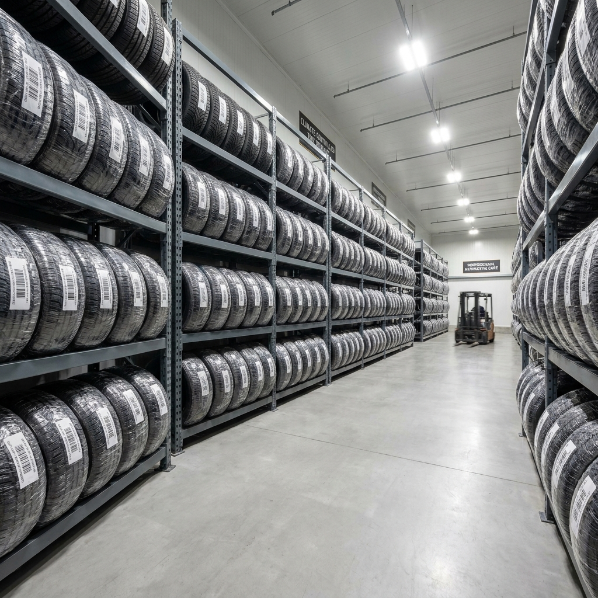

겨울 타이어 언제 갈아야 하나 — 기온 7도 기준 교체 시기와 보관 비용 비교표
겨울용(윈터) 타이어 교체의 절대 기준은 '첫눈'이 아니라 일평균 기온 7℃ 이하로 떨어지는 시점입니다.
타이어 고무는 기온이 영상 7도 밑으로 내려가면 급격히 딱딱해지는 경화 현상이 발생하여 빙판길 등 미끄러운 노면에서는 제동거리가 최대 2배까지 길어집니다. 첫눈이 내린 뒤 정비소를 찾으면 예약이 마비되어 몇 주를 대기해야 하므로, 입동 전후인 11월 초순(11-05 전후)에 미리 교체하는 것이 가장 안전합니다. 타이어 탈부착 공임과 호텔 보관 서비스 비용까지 꼼꼼히 비교해 드립니다.
정비소에서 진행되는 겨울용 윈터 타이어 교체 및 장착 작업 / AI 제작 이미지
01 | 첫눈 오기 전에 바꿔야 하는 이유와 7℃의 법칙
많은 운전자들이 '눈이 내리면 그때 타이어를 갈아야지'라고 생각하지만, 이는 대단히 위험한 오해입니다.
한국교통안전공단과 타이어 제조사들의 공식 안전 지침에 따르면, 타이어 교체의 기준 온도는 일평균 기온 7℃입니다.
사계절용이나 서머 타이어에 쓰이는 일반 고무 컴파운드는 기온이 7℃ 이하로 떨어지면 유연성을 잃고 플라스틱처럼 딱딱하게 굳어버립니다.
고무가 굳으면 노면과의 밀착력(그립력)이 현저히 떨어져, 눈이나 얼음이 없는 마른 아스팔트 도로에서도 제동 거리가 20~30% 이상 증가하게 됩니다.
반면 윈터 타이어는 실리카 컴파운드 배합으로 영하 20도의 혹한에서도 고무가 부드러움을 유지하도록 설계되어 있습니다.
02 | 사계절 타이어 vs 겨울용(윈터) 타이어 제동거리 실측 비교
빙판길과 눈길, 그리고 한겨울 일반 노면에서 두 타이어의 제동력 차이는 생명과 직결됩니다.
| 노면 상태 (시속 40~50km 기준) |
사계절 타이어 제동거리 |
윈터 타이어 제동거리 |
제동거리 차이 (안전 마진) |
| 빙판길 (블랙아이스 노면) |
약 37.8m |
약 18.5m |
제동거리 50% 단축 (절반 수준) |
| 압설 노면 (눈 쌓인 도로) |
약 35.2m |
약 19.1m |
약 16m 단축 |
| 영상 2℃ 마른 아스팔트 |
약 15.4m |
약 12.8m |
약 2.6m 단축 (돌발 정지 시 결정적) |
특히 겨울철 출퇴근 시간대에 다리 위나 터널 출입구에 발생하는 투명한 살얼음인 '블랙아이스'에서는 사계절 타이어가 제동력을 거의 상실합니다.
윈터 타이어는 촘촘한 미세 홈(사이프, Sipe)이 수막을 흡수하고 얼음 표면을 긁어내듯 밀착하여 미끄러짐을 최소화합니다.
03 | 윈터 타이어 종류 비교 — 알파인(Alpine) vs 노르딕(Nordic)
국내에서 판매되는 윈터 타이어는 운전 환경과 지역에 따라 알파인과 노르딕 두 가지로 나뉩니다.
| 구분 |
알파인 (Alpine) 계열 |
노르딕 (Nordic) 계열 |
| 주요 주행 환경 |
제설이 잘 되는 도심, 고속도로, 마른 노면 |
눈이 잦은 강원 산간, 비포장도로, 폭설 지역 |
| 타이어 특성 |
고속 주행 안정성 우수, 고무 마모 적음 |
극저온 빙판길 접지력 극대화, 소프트 컴파운드 |
| 속도 등급 |
H(210km/h) ~ V(240km/h) 고속 대응 |
Q(160km/h) ~ T(190km/h) |
| 추천 대상 |
수도권 및 대부분의 일반 도심 운전자 |
강원도, 충북 산간 지역 거주 및 잦은 방문자 |
서울·수도권이나 광역시 등 평소 제설 작업이 신속하게 이루어지는 곳에서는 고속 주행 시 꿀렁거림이 적은 알파인 계열을 선택하는 것이 정답입니다.
04 | 10월 하순~11월 초순 적기 교체 타임라인과 예약 타이밍
우리나라 중부지방 기준으로 일최저기온이 5도 안팎으로 떨어지고 일평균 7도 선이 무너지는 시기는 **11월 첫째 주(입동, 11월 7일 전후)**입니다.
이 시기에 맞추어 10월 25일부터 11월 5일 사이에 정비소에 방문하여 교체 작업을 진행하는 것이 가장 이상적입니다.
11월 중순 첫눈 예보가 뜨면 타이어 전문 매장에 하루 40~50대 이상이 몰려 대기 시간만 3~4시간이 걸리거나 예약 자체가 마감됩니다.
온라인 쇼핑몰이나 제조사 직영점(티스테이션, 타이어프로 등)에서 10월 중순에 사전 예약을 완료하면 대기 없이 신속하게 교체할 수 있습니다.

항온·항습 환경의 타이어 호텔 보관 전문 랙 설비 / AI 제작 이미지
05 | 윈터 타이어 교체 공임 및 탈부착 비용 비교표
이미 윈터 타이어를 보유하고 있는 상태에서 계절마다 진행하는 탈부착 공임은 휠 세트 유무에 따라 차이가 납니다.
| 작업 유형 |
1개당 비용 |
4개 1세트 총비용 |
특징 및 권장 사항 |
| 타이어만 교체 (기존 휠에 고무 탈착) |
15,000 ~ 25,000원 |
60,000 ~ 100,000원 |
휠 림 손상 위험 존재, 휠 밸런스 비용 포함 |
| 휠+타이어 세트 단순 교체 |
5,000 ~ 10,000원 |
20,000 ~ 40,000원 |
단순 리프트 탈부착, 공임 대폭 절약 |
장기적으로 윈터 타이어를 운용할 계획이라면 중고 순정 휠을 한 세트 더 구비하여 '휠 일체형 세트'로 보관하는 것이 림 손상을 막고 매년 교체 공임을 절반 이하로 줄이는 현명한 방법입니다.
06 | 타이어 호텔 보관 서비스 비용과 업체별 보관 조건
부피가 큰 타이어 4짝을 아파트 베란다나 실내에 보관하기 어렵다면 타이어 전문점의 '타이어 호텔' 보관 서비스를 이용하면 편리합니다.
| 보관 채널 및 업체 |
1시즌 (약 5~6개월) 보관료 |
주요 보관 조건 및 혜택 |
| 신규 타이어 구매처 (직영점) |
무료 ~ 30,000원 |
신품 구매 프로모션으로 1~2시즌 무료 제공 빈번 |
| 일반 타이어 대리점 |
40,000 ~ 60,000원 (4짝 기준) |
실내 랙 보관, 교체 시 공임 별도 청구 |
| 전문 물류 보관 센터 (수입차) |
80,000 ~ 120,000원 |
항온·항습 보관실, 타이어 세척 및 바코드 전산 관리 |
보관 시에는 반드시 보관증(종이 또는 모바일 바코드)을 수령해야 하며, 타이어의 잔여 마모도와 제조일자(DOT), 스크래치 여부를 사진으로 찍어두는 것이 추후 분실이나 뒤바뀜 사고를 예방하는 지름길입니다.
07 | 기존 타이어 자가 보관 시 올바른 적재 및 관리 요령
비용 절감을 위해 집 창고나 개인 공간에 타이어를 직접 보관할 경우 고무 변형을 막는 적재 방법을 지켜야 합니다.
📦 사계절/서머 타이어 올바른 보관 체크리스트
1. 세척 및 건조: 탈거한 타이어의 흙먼지와 염화칼슘을 물로 깨끗이 씻고 그늘에서 완전히 건조
2. 보관 자세 (휠 결합 유무):
• 휠이 결합된 타이어: 눕혀서 가로로 쌓거나 걸이에 매달기 (공기압은 50% 수준 유지)
• 고무만 있는 타이어: 눕히지 말고 세로로 똑바로 세워 보관 (1달에 한 번씩 돌려주기)
3. 보관 환경: 직사광선(자외선)이 닿지 않고 통풍이 잘되는 서늘한 그늘(오존·열기 차단)
4. 비닐 밀봉 금지: 습기가 차서 휠 부식 및 고무 열화가 일어날 수 있으므로 부직포 커버 권장
08 | 윈터 타이어 교체 시 필수 점검 체크리스트 (TPMS·공기압)
타이어를 교체할 때 정비소에서 놓치기 쉬운 필수 점검 항목입니다.
• 공기압 셋팅: 겨울철에는 기온 하강으로 공기 밀도가 낮아져 공기압이 자연 감소합니다. 평소 적정 공기압보다 10% 정도 높게 주입(예: 평소 36psi → 겨울철 38~39psi)하는 것이 표준입니다.
• TPMS(공기압 경보장치) 센서 초기화: 휠을 교체하거나 타이어를 탈부착한 뒤 계기판에 TPMS 경고등이 뜨지 않는지 확인하고, 차량 설정 메뉴에서 '공기압 리셋'을 실행해야 합니다.
• 휠 밸런스 점검: 고속 주행 시 핸들 떨림을 방지하기 위해 4바퀴 모두 휠 밸런스 납 부착 상태를 정밀 측정해야 합니다.
09 | 겨울철 안전 운전을 위한 타이어 관리 FAQ
운전자들이 가장 궁금해하는 질문들을 모았습니다.
❓ 윈터 타이어 교체 핵심 질문 Q&A
Q. 구동축(전륜 2짝, 후륜 2짝)에만 윈터 타이어를 끼워도 되나요?
A. 절대 안 됩니다. 4바퀴 모두 교체해야 합니다. 전륜만 끼우면 후륜 접지력 상실로 코너링 시 차가 팽이처럼 도는 '오버스티어'가 발생하고, 후륜만 끼우면 조향이 불가능한 '언더스티어'가 발생하여 대형 사고로 이어집니다.
Q. 윈터 타이어의 사용 수명은 몇 년인가요?
A. 통상 3~4시즌(약 3만~4만km) 주행이 가능합니다. 다만 트레드 홈 깊이가 4mm 이하로 닳으면 눈길 배수 능력이 상실되므로 신품으로 교체해야 합니다.
#겨울타이어교체시기
#윈터타이어
#스노우타이어
#타이어공임비교
#타이어호텔보관
#알파인타이어
#겨울철차량관리
#블랙아이스대처
#타이어공기압
#안전운전상식